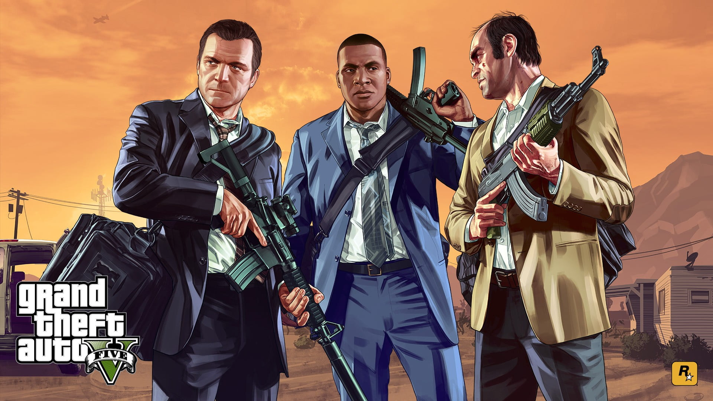

A história de Grand Theft Auto V (GTA V), lançado em 2013 pela Rockstar Games, se passa na fictícia cidade de Los Santos, uma recriação de Los Angeles, no estado de San Andreas, e segue a vida de três personagens principais: Michael De Santa, Franklin Clinton e Trevor Philips. O enredo é marcado por ações de crime, traição e vingança, misturando humor ácido com temas pesados.
Os Três Protagonistas
Michael De Santa Michael é um ex-assaltante de banco que, após um golpe que deu errado no passado, decidiu fazer um acordo com o FBI para viver uma vida de luxo em Los Santos. Ele tem uma família disfuncional e uma vida entediante, marcada pela insatisfação com seu passado de crime. Ele sofre de um sentimento de vazio e falta de propósito. A história de Michael é sobre reconciliação com seu passado e os conflitos familiares que ele enfrenta enquanto se vê novamente puxado para o mundo do crime. Franklin Clinton Franklin é um jovem que cresceu em uma comunidade violenta e sonha em escapar da vida de crimes menores para algo maior e melhor. Ele trabalha como "reparador de carros" para uma concessionária de luxo e, ao longo da história, se envolve com Michael e Trevor em várias atividades ilícitas. Franklin representa a tentativa de ascensão social através do crime, com o desejo de alcançar uma vida mais confortável e sair do submundo criminal. Trevor Philips Trevor é um antigo parceiro de Michael nos tempos de crime. Ele é impulsivo, imprevisível e extremamente violento, com uma personalidade caótica e sem limites. Após um grande roubo que deu errado, Trevor acredita que Michael morreu, mas fica furioso quando descobre que Michael está vivo e morando com sua família. Trevor é o "louco" do trio, e suas ações muitas vezes criam os maiores conflitos e momentos mais intensos na história.
O grande golpe final
O clímax da história acontece com o "grande golpe final", onde os três protagonistas se preparam para realizar um assalto épico e definitivo. Mas antes de chegar a essa parte, Michael, Trevor e Franklin enfrentam uma série de dilemas morais, entre fazer o que é certo, o que é lucrativo e o que os mantém vivos.
No final, o jogador tem a opção de escolher o destino dos três protagonistas. Há três possíveis finais, dependendo das escolhas feitas: